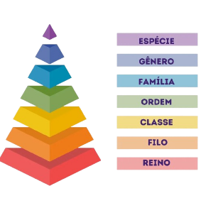

Taxonomia
Taxonomia, em termos gerais, é a ciência da classificação e organização de seres vivos ou de outros objetos num sistema hierárquico. Em biologia, a taxonomia descreve, identifica e classifica organismos, criando um sistema para entender a diversidade da vida.
Evolução Biológica
Evolução biológica é o processo de modificação das características hereditárias de uma população de seres vivos ao longo do tempo. Esse processo é fundamental para entender a origem das espécies, a biodiversidade e as interações ecológicas.
.png)
Bactérias
As bactérias são células procariontes, o que significa que não têm núcleo definido. Elas contêm material genético (DNA) em uma região chamada nucleóide, além de ribossomos para síntese de proteínas, membrana celular, e uma parede celular (principalmente de peptidoglicano). Algumas bactérias também podem ter plasmídeos, fragmentos de DNA com genes adicionais.
.png)
Vírus
Os vírus são organismos pequenos e bastante simples que são considerados seres vivos por alguns autores e não vivos por outros. Para se ter ideia da dimensão desses organismos, o menor vírus de que se tem registro possui apenas 20 nm de diâmetro, sendo ele, portanto, menor que um ribossomo. Os vírus são conhecidos, principalmente, por causarem várias doenças e serem considerados parasitas intracelulares obrigatórios.
.png)